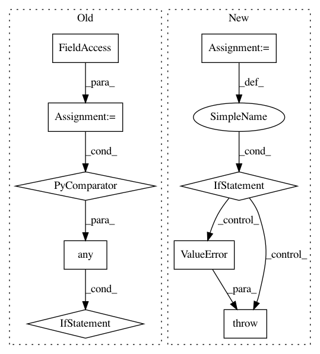

9987acb150e662a9088a09ea41d711f113e12b5c,arviz/data/io_pymc3.py,PyMC3Converter,__init__,#PyMC3Converter#,29
Before Change
self.observations = (
None
if self.trace is None
else True
if any(
hasattr(obs, "observations")
for obs in self.trace._straces[ // pylint: disable=protected-access
0
].model.observed_RVs
)
else None
)
if self.observations is not None:
self.observations = {obs.name: obs.observations for obs in self.model.observed_RVs}
After Change
// if you have a posterior_predictive built with keep_dims,
// you"ll lose here, but there"s nothing I can do about that.
self.nchains = 1
get_from = None
if predictions is not None:
get_from = predictions
elif prior is not None:
get_from = prior
elif posterior_predictive is not None:
get_from = posterior_predictive
if get_from is None:
// pylint: disable=line-too-long
raise ValueError(
When constructing InferenceData must have at least
one of trace, prior, posterior_predictive or predictions.
)
aelem = arbitrary_element(get_from)
self.ndraws = aelem.shape[0]
self.coords = coords
In pattern: SUPERPATTERN
Frequency: 3
Non-data size: 9
Instances
Project Name: arviz-devs/arviz
Commit Name: 9987acb150e662a9088a09ea41d711f113e12b5c
Time: 2020-01-19
Author: rpgoldman@goldman-tribe.org
File Name: arviz/data/io_pymc3.py
Class Name: PyMC3Converter
Method Name: __init__
Project Name: tensorflow/tensorflow
Commit Name: faf44b5391e0e9925efa66f3fc7521955962c091
Time: 2020-11-10
Author: rchao@google.com
File Name: tensorflow/python/distribute/parameter_server_strategy_v2.py
Class Name: ParameterServerStrategyV2
Method Name: _verify_args_and_config
Project Name: deepmind/sonnet
Commit Name: a73d3547b513b315d7ad804399d215a31b3381c0
Time: 2017-07-17
Author: tfgg@google.com
File Name: sonnet/python/modules/conv.py
Class Name: Conv3D
Method Name: __init__